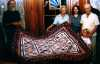
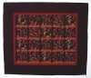
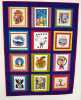
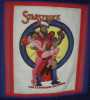
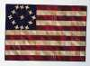
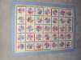
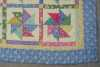

|
Here's a brief overview of Laura's quilting. Click on any of the small pictures to get a larger one. Click your browser's "Back" button to return to the gallery. |
|
 Garden patch quilt for Altha. |
 Butterfly wall-hanging quilt. |
 Comic T-shirt quilt (made from Rick's old T's). |
 Starstruck panelfrom comic shirt quilt. |
|
 Flag wall-hanging. Finished 7/98. |
Detail of flag quilt. |
 Pinwheel quilt, from Ellen's bed. |
 Detail of pinwheel quilt. |